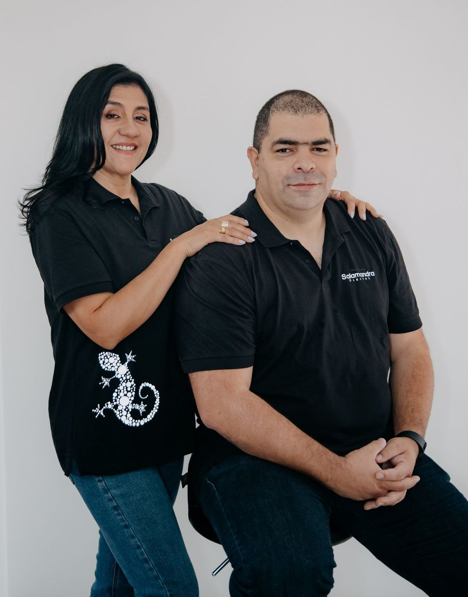
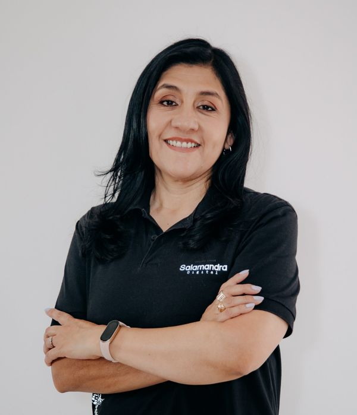

Evaluación gratuita de 30 minutos
¿Dónde se te rompe la venta?
Tu negocio no necesita más herramientas sueltas. Necesita que cada parte del camino de la venta funcione. Encontramos dónde se está rompiendo y lo reparamos con sistemas que se sostienen en el tiempo.
Sales con tu eslabón prioritario y un siguiente paso concreto. Sin compromiso de compra.
- 1Atraer "No me encuentran"
- 2Convertir "Se me pierden"
- 3Responder "Respondo tarde"
- 4Operar "Todo depende de mí"
- 5Proteger "¿Mis píxeles están bien?"
Antes de invertir en publicidad
¿De qué sirve el mejor marketing si la casa no está ordenada?
Puedes invertir miles en publicidad y aun así perder ventas, porque los mensajes se quedan sin responder, nadie hace seguimiento o todo espera a que tú lo resuelvas.
No somos una agencia de marketing ni manejamos tu pauta. Ordenamos lo que pasa después de que alguien te encuentra, para que cada contacto que ya pagaste tenga una respuesta, un seguimiento y un responsable.
Un negocio vende cuando cinco eslabones funcionan
Si tu negocio no vende lo que debería, algo se está rompiendo en el camino. Entramos por el eslabón que más te duele hoy, y desde ahí ordenamos el resto.
-
Atraer
"Tengo web, pero no me llega nada."
Presencia digital que convierte visitas en contactos: web, ficha de Google y canales con un camino claro para escribirte.
Empieza con: Auditoría de presencia digital
-
Convertir
"Me escriben y se me pierden."
Un sistema comercial donde cada prospecto queda registrado, con agenda, recordatorios y seguimiento.
Empieza con: Sistema comercial base
Ver cómo funciona → -
Responder
"Respondo tarde y pierdo clientes."
Respuesta rápida y seguimiento constante, sin depender de que alguien lo haga a mano. Automatizamos tareas, no el criterio de tu negocio.
Empieza con: Diagnóstico de automatización
-
Operar
"Todo depende de mí."
Gestión de tu operación y de tus proyectos digitales hasta la entrega: prioridades, procesos, responsables y seguimiento.
Empieza con: Diagnóstico operativo o Gestión de proyecto digital
-
Proteger
"¿Mis píxeles están bien configurados?"
Revisamos qué hacen las cookies, los píxeles y el consentimiento en tus páginas, y te explicamos los hallazgos en lenguaje simple.
Empieza con: Chequeo de Privacidad
Ver cómo funciona →
¿Vas a empezar un proyecto digital o tienes uno que nunca se termina?
La web nueva, el lanzamiento, el sistema que compraste y nadie implementó. Proveedores sueltos, cada uno avanzando a su ritmo, y tú en medio coordinando.
Gestión de proyecto digital
- Alcance claro y cronograma por semanas.
- Un responsable para cada tarea, incluidos tus proveedores.
- Seguimiento semanal hasta la entrega.
- Precio fijo según el alcance, acordado antes de empezar.
Si lo necesitas de forma continua, lo hacemos como parte de la gestión mensual de tu operación.
30 minutos para ver tu negocio con claridad
No es una llamada de ventas disfrazada. Es un diagnóstico con cinco preguntas, una por eslabón, para encontrar el que más te está costando.
- ¿Cómo te llegan hoy los clientes? Atraer
- ¿Qué pasa cuando alguien te escribe o se registra? Convertir
- ¿Cuánto tardas en responder y quién lo hace? Responder
- ¿Qué pasaría si te ausentas una semana? Operar
- ¿Qué herramientas de seguimiento tienes en tu web y a qué países vendes? Proteger
Lo que te llevas
- El eslabón que más está frenando tu venta hoy.
- Un solo siguiente paso recomendado, con alcance y precio claros.
- Un resumen escrito en máximo 24 horas.
- Si no somos la opción correcta para ti, te lo decimos.
Por videollamada. Agenda con al menos 24 horas de anticipación.
Diagnóstico, implementación y acompañamiento
Lo que se construye se documenta y se mantiene. No dejamos proyectos a medias ni sistemas que nadie sabe usar.
Diagnóstico
Un servicio de entrada con alcance cerrado. Revisamos el eslabón que más duele y te entregamos prioridades por escrito.
Implementación
Construimos la solución con cronograma, revisión semanal y capacitación al final, para que tu equipo la use desde el primer día.
Acompañamiento
Mantenimiento, gestión o monitoreo mensual, con reporte corto. Cada trimestre revisamos la cadena completa.
Trabajamos con negocios que ya venden y quieren ordenar el camino
Es para ti si
- Tu negocio ya factura y quiere vender más.
- Tienes un dolor concreto: no te encuentran, se te pierden clientes, respondes tarde o todo pasa por ti.
- Ya probaste una herramienta, una asistente o una agencia, y no funcionó como esperabas.
- Estás dispuesto a participar y tomar decisiones.
No es para ti si
- Estás empezando de cero y todavía no tienes ingresos.
- Quieres que el negocio funcione sin involucrarte.
- Solo buscas la herramienta más barata.
- Necesitas asesoría legal: te recomendamos un abogado.
Tus contactos y tu historial de ventas te pertenecen. Si algún día decides seguir por tu cuenta, te entregamos tus contactos y oportunidades en un archivo, sin costo. Si quieres conservar también las conversaciones y la configuración, transferimos la cuenta completa.
Y lo aplicamos en casa: este sitio no usa cookies ni rastreadores.
Criterio corporativo para negocios en crecimiento

Salamandra Digital nació en 2022 en Chía, Colombia. Somos Vilma y Felipe: ella ordena la operación y la estrategia; él construye y respalda la parte técnica. Trabajamos de forma remota con negocios de Latinoamérica, España y clientes hispanos en Estados Unidos.

Vilma Fajardo
Estratega y gestora operativa
Más de 35 años de experiencia profesional y, desde 2008, en transformación digital, procesos y operaciones. Hace el diagnóstico, diseña la solución y gestiona cada proyecto hasta la entrega.
Felipe Granados
Desarrollador senior
Más de 15 años de experiencia en desarrollo. Respalda la parte técnica de cada implementación y lidera la revisión de privacidad.
"Felipe y Vilma son personas muy profesionales, cálidas, transparentes y detallistas."
Encontremos dónde se te rompe la venta
30 minutos, cinco preguntas y un siguiente paso claro. Si no es el momento o no somos la opción correcta, también te lo decimos.